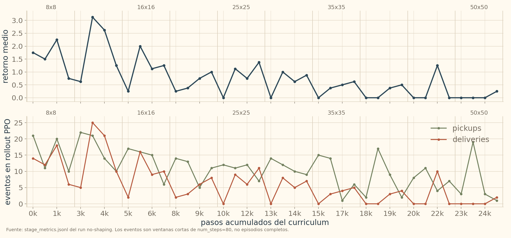
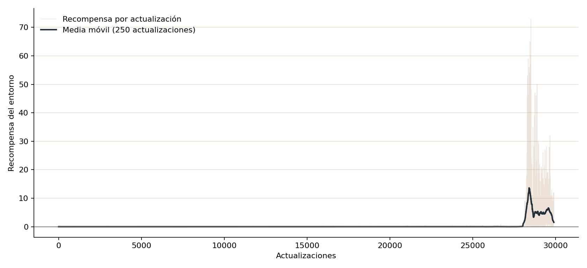
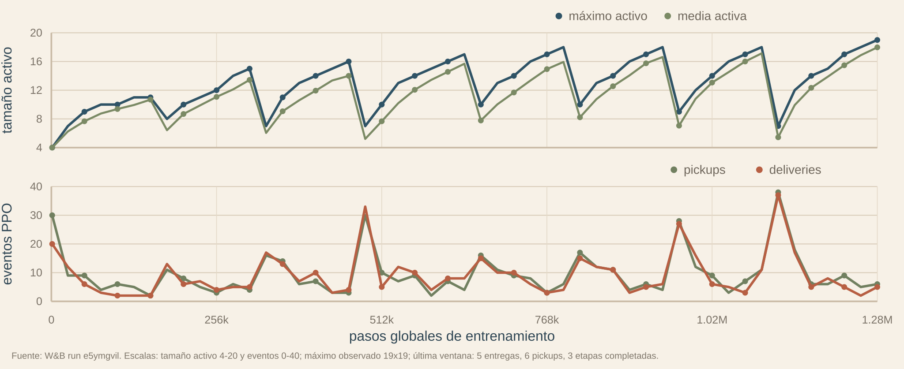
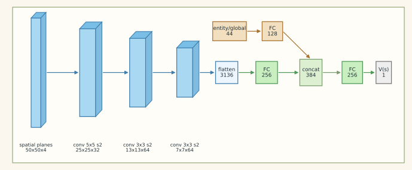

Objetivo, observación, acciones, entrenamiento y perillas del entorno.
Qué investigamos
Cool Antz estudia cómo aparece el forrajeo cooperativo en una colonia de políticas locales. Cada hormiga ve solo una pequeña ventana de la grilla, decide cómo moverse y puede escribir un valor discreto en la celda que visita. El objetivo no es tocar comida una vez: la comida se debe encontrar, levantar, llevar al hormiguero y agotar mediante viajes repetidos.
La pregunta central fue práctica y causal: qué cambios hacen que la entrega sea confiable, cuáles solo producen actividad aparente, y en qué punto la grilla de bytes empieza a parecer memoria externa útil para la colonia.
actores
Políticas locales
En despliegue cada hormiga actúa con observaciones locales: comida cercana, otras hormigas, bytes, borde, hormiguero, estado de carga, orientación e identidad.
entrenamiento
Crítico centralizado
MAPPO entrena con información centralizada. Por eso la arquitectura del crítico no es un detalle: cambia el problema de asignación de crédito.
métrica
Entrega de comida
Como las hormigas no mueren, usamos supervivencia como tasa de éxito o completitud de la tarea, no como supervivencia biológica.
índice conectado
Mapa de la página
La página queda organizada como una historia de investigación: primero el ambiente, después la búsqueda de una política válida y luego las ramas alternativas que abren nuevas preguntas.
Prueba de escala: despliegue solo-actor en 1000x1000.
Sandbox final
Política real 50x50 en el navegador
Interactuar con el actor exportado: mapa, fuentes, paredes, velocidad y modo de acción.
ambiente principal
El ambiente principal de entrenamiento
La tarea visible es buscar comida, pero el experimento apunta a
otra cosa: ver si agentes locales, sin memoria recurrente y sin
coordenadas globales, pueden construir una memoria compartida sobre
el entorno. Para volver al hub, repetir entregas y coordinarse, las
hormigas tienen que aprender a usar el mapa como soporte externo:
escribir marcas, leer rastros y aprovechar señales dejadas por
otros agentes.
Si la política recibiera la posición del hub o pudiera guardar
memoria interna con una arquitectura recurrente, el problema sería
otro. Acá la restricción fue deliberada: durante entrenamiento el
crítico podía usar información global para asignar crédito, pero la
política evaluada era local y feed-forward.
Cerrar ciclos fuente-hub
Cada hormiga debe encontrar comida, cargar un bocado, volver al
hub y repetir hasta agotar las fuentes. El reward base es
+1 por entrega; tocar comida una vez no alcanza.
Sin memoria recurrente propia
No usamos políticas con LSTM, GRU ni hidden state persistente. La política evaluada es feed-forward: decide desde lo que ve en el instante actual.
Mover y escribir
Para N hormigas, el env usa:
MultiDiscrete([5, 2 ** write_bits] * N)
Cada agente elige un par (move, write_value).
move: stay, up, right, down, left.write_value: entero entre0y2 ** write_bits - 1.- Usamos escritura al mover: el valor se aplica sobre el tile de llegada si es escribible.
- No se escribe sobre hub ni sobre una celda que todavía tiene comida.
Observación local exacta
Todas las hormigas comparten actor. Cada una recibe una
observación local orientada por su facing; en la línea final
usamos radio 2.
food: conteo local normalizado por comida por fuente.ants_count: ocupación local normalizada por cantidad de hormigas.bytes: bitmasks locales, una capa por bit escribible.hub: máscara local si el hub entra en visión.border/obstacles: máscara de borde y obstáculos.agent_identity: one-hot de identidad para romper simetría y permitir especialización.- Estado propio: carrying flag y facing one-hot.
Escribir sobre el mapa
Cada celda puede guardar un valor discreto definido por
write_bits. Esa capa escrita era la memoria que
queríamos que emergiera: rastros de retorno, marcas de
exploración o señales útiles para otras hormigas.
La escritura sólo se aplica sobre tiles escribibles: no sobre el hub ni sobre una celda que todavía tiene comida.
Observación completa del simulador
El estado base del entorno conserva
ants_pos, ants_carrying,
ants_facing, ants_count,
food, bytes,
obstacles y hub_pos.
Esa vista existe para simular y entrenar; no es lo que recibe crudo la política evaluada.
Crítico global, actor local
MAPPO usa un crítico centralizado para asignar crédito durante entrenamiento. Recibe posiciones de hormigas, carrying, facing, mapas globales de ocupación, comida, bytes, posición del hub, tamaño activo del grid y features auxiliares globales.
En evaluación no actúa ese estado global: sólo corre el actor local compartido.
Evitar memorizar layouts
Entrenamos con hub y comida randomizados para que la solución no sea recordar coordenadas. La política tiene que aprender un procedimiento: explorar, marcar, volver y reutilizar señales.
Una familia de entornos
El mismo env podía escalarse variando tamaño de mapa, cantidad de hormigas, comida total, número de fuentes, distancia fuente-hub en layouts fijos, radio de visión, cantidad de bits, máximo de pasos y obstáculos.
1
primer capítulo
Buscando una política óptima
La página va a contar una sola línea: qué falló, qué cambió y por
qué el cuello de botella terminó estando en la representación del
crítico.
Buscando una política óptima
La página va a contar una sola línea: qué falló, qué cambió y por qué el cuello de botella terminó estando en la representación del crítico.
-
1Afracaso inicial
Baseline directa
La baseline directa confirmó que el problema no era dibujar el entorno: era lograr que MAPPO descubriera el ciclo fuente-hormiguero.
Entrenamos el ambiente final directamente, sin currículo:
50x50,10hormigas,48comidas,12fuentes,5bits y radio local1. Después de10000updates y12.8Mpasos, la evaluación shuffled seguía en cero.- eval determinista
- 0.0/48, success 0.0
- eval muestreada
- 0.0/48, success 0.0
búsqueda con reward shapingProbamos dar señales intermedias sin cambiar el objetivo: cerrar entregas al hormiguero.
Con
pickup_bonus=0.1y2.0Msteps, la evaluación muestreada llegó a 8.125/48, pero la determinista quedó en 0.0/48; success fue 0.0 en ambos casos.Aparece actividad y alguna entrega sampleada, pero no una política robusta.
La lectura fue clara: no había que entrenar más tiempo de la misma manera, había que cambiar la forma de presentar y entrenar el problema.
Pasada con reward shaping. El video ayuda a separar actividad visible de una política confiable de entrega. -
1Bprimer enfoque
Crecer el mapa
Después de la baseline, el primer avance fue formular el escalado como curriculum learning: entrenar en arenas chicas, conservar la política y aumentar gradualmente el mapa. La hipótesis era que una estrategia local de búsqueda y retorno podía sobrevivir al crecimiento del tablero.
La limitación apareció rápido: una política útil en mapas chicos no se trasladaba bien, por sí sola, a mapas grandes. El mismo comportamiento que cerraba ciclos cortos empezaba a perder sentido cuando las fuentes quedaban lejos y la recompensa de entrega se volvía escasa.
Ese enfoque también exponía un límite de representación. En ese momento el actor miraba apenas un cuadrado local de
3x3y tenía un solo bit de escritura. Si miramos solamente el canal escrito de esas nueve celdas, había2^9patrones locales posibles; la observación completa incluía más señales, como comida, hormigas, borde, orientación y si la hormiga cargaba comida, pero el protocolo externo seguía siendo muy angosto.La idea funcionó hasta cierto punto. Los rollouts ya no eran puro movimiento sin dirección: aparecían ciclos de comida, retorno y nueva búsqueda. Pero al agrandar el mapa, el costo de descubrir fuentes y sostener cobertura empezó a dominar. En mapas chicos, rebotar contra paredes todavía daba pistas útiles; en mapas grandes, las paredes quedaban lejos y la señal de reward por entrega se volvía mucho más escasa. Además, era conceptualmente incómodo depender tanto de los bordes: en un entorno natural, las hormigas no deberían necesitar paredes artificiales para organizar el retorno.
resultadoEn una corrida del curriculum
8x8 -> 50x50repetimos el entrenamiento sin shaping durante el probe: el reward de entrenamiento es reward de entorno, es decir, entrega de comida al hormiguero. El warm-start venía de un checkpoint anterior, así que no es una genealogía pura desde cero; aun así, la parte que usamos para medir escalado ya no agrega bonuses de pickup, visita, distancia ni bytes.La matriz retrospectiva, evaluada de forma greedy para medir retención, deja al checkpoint final con 31% de su mejor valor en
8x8y 67% en16x16, pero cae a 14% en25x25y a 0% en35x35. En50x50queda una señal no nula (0.52comidas cada 1000 pasos-hormiga), pero el valor absoluto es demasiado bajo para leerlo como una solución. Para los rollouts visuales usamos escritura greedy y movimiento sampleado con temperatura0.525.La lectura no fue descartar curriculum learning, sino aislar qué estaba fallando: crecer sólo el mapa volvía el reward más lejano, reducía la utilidad de las paredes como referencia y hacía que los rastros locales dejaran de alcanzar como protocolo de retorno.
El siguiente paso fue probar si esa falla era sólo de escala del tablero o también de densidad de colonia. Si el mapa crecía pero la cantidad de hormigas quedaba fija, la exploración se volvía demasiado pobre; si había demasiadas hormigas en mapas chicos, la tarea podía parecer resuelta por saturación. Eso motivó el currículo manual de más mapa y más hormigas.

El retorno del entorno se vuelve más bajo e irregular al crecer el mapa. Los pickups persisten mejor que las entregas, pero estos eventos vienen de ventanas cortas de entrenamiento. 8x8 12x12 16x16 20x20 25x25 30x30 35x35 40x40 45x45 50x50 La transición visual es más informativa que un único score. Hasta
25x25, todavía aparecen búsqueda local, pickups y entregas en ventanas cortas. A partir de30x30, la misma observación local produce exploración y escritura visible, pero cada vez menos retorno estable: las paredes aparecen menos, las fuentes tardan más en entrar al campo local y los rastros dejan de funcionar como protocolo global. Los videos son rollouts sampleados de cada checkpoint, no la matriz greedy de retención; sirven para ver el cambio de comportamiento, no para leer conteos de delivery exactos. -
1Ccurrículo manual
Más ants, más map
El problema no era solo agrandar el mapa: también había que evitar que las primeras etapas se resolvieran por saturación de hormigas.
Si dejábamos demasiados agentes en arenas chicas, el comportamiento podía parecer útil sin haber aprendido una estrategia transferible. Por eso probamos una progresión más balanceada: subir mapa y colonia al mismo tiempo.
El setup recorría una escalera de dificultad:
4x4 / 1,6x6 / 1,8x8 / 2,10x10 / 2,12x12 / 3,16x16 / 4,20x20 / 5,25x25 / 6,32x32 / 8,40x40 / 10y50x50 / 10. Cada etapa intentaba mantener el desafío vivo: ni mapa demasiado grande sin cobertura, ni mapa chico resuelto por densidad.El fallo apareció en el criterio de avance. Llegar a
16x16con4hormigas no significaba que la política hubiera aprendido ese mapa. El rollout muestra actividad y contacto con la tarea, pero no ciclos fuente-hormiguero confiables.lecturaLa hipótesis estaba mejor planteada, pero el salto seguía ocurriendo antes de validar maestría.
La progresión hacía más honesta la dificultad, pero todavía dependía del calendario del experimento. Necesitábamos una señal clara de que una etapa estaba dominada antes de pasar a la siguiente.
De ahí sale el siguiente bloque: validation gates.
8x8 / 2 ants. La etapa chica deja de ser una arena saturada y empieza a pedir coordinación real. 16x16 / 4 ants. Al crecer, la actividad ya no alcanza para decir que el escenario está aprendido. -
1Dvalidación
Validation gates
Las gates resolvieron una parte del problema: ya no avanzábamos de etapa sólo porque el calendario lo decía.
Después del currículo de mapa y colonia, cambiamos el criterio de promoción. Una etapa sólo podía pasar si demostraba dominio en evaluaciones determinísticas y muestreadas: entrega casi completa, éxito suficiente, pickup-to-delivery alto y episodios dentro de una ventana razonable de pasos.
- entrega mínima
delivered_fraction >= 0.95- success rate
success_rate >= 0.75- pickup to delivery
pickup_to_delivery >= 0.90- longitud máxima
0.65del máximo de pasos
El cambio funcionó como freno. La cadena pasó
10x10 / 2,12x12 / 3,16x16 / 4y20x20 / 5, pero dejó de escalar automáticamente cuando25x25 / 6no pudo sostener todas las condiciones. Ahí el mejor gate score quedó en0.875, cerca de pasar, pero sin cumplir todos los criterios a la vez.resultadoEn
16x16 / 4 ants, el attempt099alcanzó gate score1.0.La evaluación determinística entregó 13.875/14 con success 0.875; la muestreada entregó 13.688/14 con success 0.875.
El número era excelente, pero el rollout mostró el límite: pasar métricas de entrega no garantizaba una estrategia transferible.
La lectura fue más fina que “falló”. Las gates corrigieron el salto prematuro, pero también dejaron expuesto que necesitábamos validar la semántica de la política, no sólo contar entregas.
16x16 / 4 ants, attempt 099. Las métricas pasan, pero el patrón visual de “escaleras” muestra que la gate todavía no captura qué tipo de solución se aprendió. -
1Eobservación local
Curriculum de radio de visión
El planteamiento fue usar el radio de visión como currículo: empezar con una política que observa casi todo el tablero y, recién después, exigirle operar con una observación local.
La hipótesis inicial era que una hormiga con visión global tenía una tarea más fácil: si podía ver dónde estaban las galletas, no tenía que descubrir fuentes a ciegas. Entonces el plan era aprender primero en ese caso aparentemente benigno y usar esa política como punto de partida para radios cada vez más chicos.
En este experimento, radio
25significaba que cada decisión del actor recibía una observación51x51:2601celdas con canales de comida, hormigas, bits escritos, hub y borde/obstáculos, más señales propias como si la hormiga carga comida y hacia dónde mira. En la versión densa, esa grilla se aplana y entra a un MLP que termina en dos heads de acción: movimiento y escritura. El crítico, usado durante entrenamiento, mira una observación centralizada para estimar valor, pero la acción ejecutada sale del actor local de cada hormiga.Ahí aparece el problema: una ventana
51x51no es una pista pequeña, es un espacio visual enorme. La red tiene que aprender qué posiciones importan dentro de miles de entradas posibles. Además, las hormigas no tienen memoria recurrente interna: en cada paso la política decide desde la observación actual y lo que haya quedado escrito en la grilla. Por eso el actor tiene que aprender una regla reactiva que, aplicada paso a paso, cierre el ciclo comida-hub: acercarse, hacer pickup, volver y repetir. Ver más no resuelve automáticamente esa asignación de crédito.Luego, si el radio de visión grande convergía, la idea era achicar la ventana haciendo warm-start. En la versión con primera capa densa, esa capa recibe una lista larga de valores: primero las celdas de comida, después las de hormigas, después los bits, y así. Si pasamos de
51x51a41x41, la nueva observación corresponde al sub-tensor central de la observación anterior. Conservamos las conexiones que miraban esas coordenadas centrales, porque siguen existiendo en el nuevo radio, y descartamos las conexiones asociadas al anillo exterior. No se reinventa toda la red: las capas internas, los heads de acción y el crítico quedan como estaban; sólo cambia la entrada compatible con el nuevo tamaño.Como respuesta a esa dificultad, también se probó un enfoque convolucional con el objetivo de ayudar a la convergencia. La motivación era que filtros compartidos explotaran la estructura espacial de la grilla antes de pasar al MLP, en lugar de obligar a la red a tratar cada celda como una variable independiente. Pero incluso con ese cambio, y con un entorno deliberadamente denso en galletas para darle muchas oportunidades de pickup, la política no logró una conducta greedy de pickup estable ni convergió de forma confiable.

Radio 25 / ventana 51x51. El retorno real queda pegado a cero durante casi todo el entrenamiento. Los picos aparecen tarde y no forman una meseta estable. Rollout greedy de la política 51x51. Esta variante usaba capas convolucionales para facilitar la lectura espacial. A pesar de la alta densidad de galletas, la inspección visual no deja ver pickups claros y tampoco muestra una conducta confiable de retorno al hub. resultadoLa etapa de visión completa no produjo una base estable para transferir. Ver el mapa entero no alcanzó para aprender una política robusta de forrajeo.
La curva resume el problema mejor que un único mejor punto: aparece algún pico de reward, pero no se transforma en una meseta ni en una tendencia sostenida. Para leer el comportamiento de pickup hay que apoyarse en el rollout visual: la métrica dura del gráfico es entrega al hub.
La lectura es que la visión global introdujo demasiados grados de libertad. La política tenía que resolver a la vez selección espacial, navegación, pickup y retorno. Cuando la señal positiva aparece sólo en picos, el checkpoint siguiente no hereda una habilidad sólida sino una política frágil.
En retrospectiva, el experimento enseñó que “más información” no era lo mismo que “problema más fácil”. Con radio gigante, la red tenía que aprender a seleccionar señales relevantes dentro de una entrada enorme antes de poder aprender el comportamiento de forrajeo. Como esa base era frágil, el warm-start por recorte central no alcanzaba: al reducir el radio se preservaba estructura, pero no una estrategia ya dominada.
-
1Fdesbloqueo
Reward shaping
Antes del cambio de crítico, casi toda esta línea todavía usaba crítico MLP y actor local. El problema no era que las hormigas no hicieran nada: con bonos de pickup ya podían detectar que levantar comida era una señal positiva. El cuello de botella era cerrar el ciclo completo. En mapas grandes aparecían pickups, escritura y movimiento, pero la vuelta al hormiguero seguía siendo frágil.
Ahí empezamos a usar reward shaping como andamio de crédito.
pickup_bonusseparaba encontrar comida de entregarla; ayudaba a que la política no ignorara fuentes cercanas, pero por sí solo no enseñaba un protocolo de retorno. Los bonos de distancia, primero comodistance_bonusy después comocarrying_hub_distance_bonus, metían señal densa sobre moverse hacia comida o hacia el hub. Esa fue la primera mejora clara en25x25:DISTANCE_SHAPEllegó a13.75/23en greedy, y la combinación con cuatro hormigas enDISTANCE_CAP4resolvió23/23en modo muestreado.También probamos bonos de exploración, como
visit_reward_scale, para evitar que la política se quedara orbitando comportamientos locales. Sirven para generar cobertura, pero son peligrosos si no se apagan o condicionan: pueden premiar deambular en lugar de entregar. La línea de escritura fue distinta. No había un premio simple por cualquier write; lo que aparece en código y planes son incentivos para escribir mientras se carga, seguir tiles marcados, entregar con una traza previa de bytes y balancear entropía de bits (carrying_byte_write_bonus,byte_follow_bonus,delivery_byte_trail_bonus,write_bit_entropy_bonus). Eso se puso porque las hormigas ya podían encontrar comida, pero necesitábamos probar si las marcas ayudaban a sostener rutas.Para leer los runs, estos son los términos operativos:
pickup_bonus: suma recompensa cuando una hormiga pasa de no cargar a cargar comida.distance_bonus: suma progreso Manhattan normalizado hacia comida si la hormiga va vacía, o hacia el hub si ya venía cargando; el paso no cuenta cuando cambia de modo.carrying_hub_distance_bonus: suma sólo el progreso Manhattan normalizado hacia el hub mientras la hormiga sigue cargando comida.visit_reward_scaleyview_reward_scale: premian celdas nuevas pisadas o vistas; el factor decae como(1 - coverage) ** decay.delivery_byte_trail_bonus: agrega recompensa por delivery según cuántas celdas activas tenían bytes no cero antes de entregar, saturando endelivery_byte_trail_target_tiles.byte_follow_bonus: premia a una hormiga vacía que entra a una celda ya marcada y reduce su distancia a la comida más cercana.carrying_byte_write_bonus: premia a una hormiga cargando que aplica un write no cero sobre una celda fresca que no sea comida ni hub.write_entropy_bonusywrite_bit_entropy_bonus: el primero es terminal y mide entropía de valores no cero en el mapa; el segundo reparte bonus por rollout cuando las escrituras aplicadas usan los bits de manera balanceada.write_bit_penalty: no es un premio; resta por bits escritos, con costo decreciente para bits más altos. No estuvo activo en la comparación por familias.
En los videos nuevos, exploración activa sólo
visit_reward_scale; forraje/retorno activapickup_bonusycarrying_hub_distance_bonus; escritura/trazas activa los tres bonuses de bytes ywrite_bit_entropy_bonus.La lectura histórica es mixta. El shaping de distancia fue el primer desbloqueo real, pero no era una prueba de comunicación. Los incentivos de bytes generaron actividad escrita y algunos resultados interesantes, como la corrida DENSE2-TRAIL, pero también introdujeron una trampa: subir retorno moldeado o llenar el mapa de marcas no garantiza que haya más entregas ni que los bytes sean causales.
comparación por familiasPara comparar reward shaping de forma más legible, corrimos este experimento por familias: una continuación sin shaping, un incentivo de exploración, un incentivo de forraje/retorno y un incentivo de escritura/trazas. Todas parten del mismo checkpoint
50x50con crítico MLP, usan2bits de escritura y entrenan120updates antes de renderizar el rollout.La comparación que nos interesa no es solo cuál entrega más comida, sino qué sesgo de comportamiento parece inducir cada familia: deambular para cubrir mapa, perseguir comida cercana, volver cargando o dejar marcas que otros puedan explotar. Por eso la evidencia principal de esta parte son videos comparables, acompañados por métricas de entrega como control.
Sin shaping · 12.9/48 Exploración · 15.6/48 Forraje/retorno · 15.5/48 Escritura/trazas · 18.4/48 Los videos no muestran comportamientos cualitativamente separados. Lo que aparece son sesgos sutiles sobre una política que ya venía con hábitos heredados del checkpoint inicial. Sin shaping, la política conserva actividad y marcas diagonales, pero entrega poco. El bonus de exploración parece abrir algo más de cobertura lateral; forraje/retorno no se distingue con fuerza en este presupuesto.
La familia de escritura/trazas es la mejor en entrega parcial (
18.4/48contra12.9/48de la continuación sin shaping) y deja rutas algo más persistentes. Aun así, ninguna configuración completa el mapa: todas tienen success0. La conclusión no es que reward shaping resuelva el problema, sino que cambia el régimen de comportamiento y que los incentivos de marcas eran una hipótesis razonable para investigar antes de cambiar el crítico. -
1Gdificultad adaptativa
Autocurriculum por tamaño activo
Este intento reemplazó el calendario fijo por autocurriculum: el mapa activo sólo crecía cuando la política hacía
6entregas en la etapa actual. La idea era evitar pasar a mapas grandes antes de dominar el ciclo mínimo de buscar comida, recogerla y volver al hub.La observación seguía acolchada a
50x50, pero el área jugable arrancaba en4x4. El actor era una sola política feed-forward; no había una política por tamaño ni un cambio de arquitectura entre etapas. El contrato fue chico: una hormiga, radio local1, dos fuentes con12bocados totales,1bit de escritura, críticomlp,pickup_bonus=0.25y sin shaping de distancia.En este run, la regla produjo progreso mecánico: en
1.28Mpasos el tamaño activo llegó a19x19. Pero el gráfico muestra una señal de serrucho, no una transferencia estable hacia tamaños grandes.lecturaLa falla no descarta curriculum learning; descarta este gate. Medía entregas locales en la etapa actual, pero no retención: después de crecer, la política podía volver a actividad local sin preservar un protocolo global de regreso.
Rollout del checkpoint final, recortado al sector activo del mapa acolchado. Muestra crecimiento de la arena, no una solución de 50x50.
El tamaño activo sube y vuelve a caer. Los picos de pickups y deliveries aparecen después de regresar a tamaños chicos; la última rampa hacia 19x19termina con5entregas y6pickups. -
1Hexploración estructurada
Laberintos
La rama de laberintos no fue un benchmark comparable de forrajeo. Cambiaba la geometría del mundo para forzar exploración estructurada: paredes internas, pasillos anchos y cobertura de celdas como señal principal. Eso era útil para probar si la política podía moverse en entornos con obstáculos, pero no medía el ciclo completo de encontrar comida, volver al hub y entregar.
En este run de W&B, el currículo entrenó laberintos de
10x10a50x50con una hormiga,48comidas,12fuentes,2bits, radio local1, críticomlpyreward_mode=explore. La etapa final reportóepisode_return=26.125, pero0pickups,0deliveries y45.5/48comidas restantes. La métrica positiva era exploración, no forrajeo resuelto.La lectura es negativa pero concreta: la infraestructura de obstáculos funciona y el video entrenado muestra exploración en pasillos, pero no demuestra forrajeo resuelto. Para que laberintos sean una línea principal habría que cambiar el contrato: entrenar y evaluar entrega en laberinto, no sólo cobertura.
W&B 8ebnjq9f · etapa 50x50 -
1Idescubrimiento
Fuentes dispersas
Después de mejorar retorno, apareció otro cuello: descubrir fuentes escasas. Esta rama es la misma familia conceptual que la prueba de inner grid: mantener una arena externa grande para conservar compatibilidad de observación y checkpoint, pero restringir comida y hub a una ventana interior donde se controla la dificultad.
La evidencia se parte en dos. Antes de
strided_cnn, estos runs prueban geometría de fuentes con críticomlp. Después, el primer resultado útil ya no mide sólo sparse food: mide sparse food más un crítico espacial.La conclusión pre-CNN es negativa: esconder la tarea dentro de una ventana interior no alcanzó. La conclusión post-CNN es distinta: cuando aparece señal en proximity, no podemos atribuirla sólo al layout de fuentes porque el crítico también cambió.
antes del crítico espacialEl intento más directo, padded sources, usó una arena
50x50con tarea efectiva20x20,18unidades de comida y fuentes que bajaban de12posiciones a2. Mantuvo el críticomlpy terminó con0.25/18en evaluación.12 fuentes 6 fuentes 2 fuentes primer post-crítico espacialLa primera señal más útil apareció con proximity sources: arena externa
50x50, ventana interior30x30, dos macro-fuentes y footprints que se achican hasta dos celdas finales. Esa corrida ya usastrided_cnny llegó a40.875/250.50 posiciones 8 posiciones 2 posiciones -
1Jcuello real
El límite causal fue el crítico
El cambio de crítico no fue un detalle menor. El actor seguía viendo sólo su observación local, pero PPO entrenaba con un crítico centralizado. El mejor punto
50x50con críticomlpllegó a21.5/48. Era actividad útil, pero todavía no una política fuerte de escala.La primera política realmente buena de este linaje aparece cuando el experimento de fuentes dispersas pasa a
strided_cnn. Ese run de proximity sources usa arena externa50x50, ventana interior30x30, dos macro-fuentes y footprints que se achican hasta dos posiciones. Llegó a40.875/250.lectura causalEsto no prueba que el crítico por sí solo explique todo: en fuentes también cambió la geometría de descubrimiento. Pero sí marca una frontera real. Antes del crítico espacial no teníamos una política 50x50 convincente; después aparece el primer comportamiento útil.
Las mejoras posteriores con
8y60hormigas pertenecen a esta familia espacial, pero ya mezclan más agentes, escritura compartida, costos, selección de checkpoint y temperatura de rollout. Por eso esta sección se queda con el primer punto claro: fuentes dispersas con buen crítico.
El strided_cnnconserva estructura espacial con mapas convolucionales y fusiona esa rama con features de entidad antes de estimar el valor.proximity sources + strided_cnn · rollout largo
2
experimento de escala
Mapas más grandes, hormigueros enormes
Después de obtener una política fuerte en 50x50,
hicimos una prueba de estrés: desplegar el mismo actor en una
escena 1000x1000, con 500 hormigas y 5000 comidas.
Mapas más grandes, hormigueros enormes
Después de obtener una política fuerte en 50x50,
hicimos una prueba de estrés: desplegar el mismo actor en una
escena 1000x1000, con 500 hormigas y 5000 comidas.
No es entrenamiento de punta a punta en el mapa gigante. Es un experimento visual para ver si una política local conserva algo de organización cuando el mapa crece varios órdenes de magnitud.
50x50 en el que se entrenó la política.
1000x1000, con 500
hormigas y 5000 comidas.
{kind=link}
{kind=link}
{kind=link}
4
memoria compartida en disputa
Entrenamiento adversarial - Dos hormigueros en búsqueda de galletas
Capítulo para reconstruir la historia del entorno adversarial:
dos colonias compitiendo por comida, pérdida de la política
previa al empezar a entrenar, anclaje con KL para no olvidar y el
primer resultado estable con un equipo freeze y otro en training.
Entrenamiento adversarial - Dos hormigueros en búsqueda de galletas
Capítulo para reconstruir la historia del entorno adversarial: dos colonias compitiendo por comida, pérdida de la política previa al empezar a entrenar, anclaje con KL para no olvidar y el primer resultado estable con un equipo freeze y otro en training.
-
4Anuevo problema
El entorno adversarial
El ambiente adversarial no cambia la mecánica central de AntByte: cambia quién puede usar y modificar la memoria escrita en el mundo.
Partimos del mismo AntByte: hormigas locales, comida dispersa, escritura sobre el mapa y políticas sin memoria recurrente. La diferencia es que ahora hay dos colonias sobre el mismo tablero: dos hubs, comida compartida y un único grid de bytes que ambos equipos pueden leer y sobrescribir.
qué cambia- Una colonia pasa a ser dos equipos.
- Un hub pasa a ser dos hubs.
Nhormigas pasan a ser2N.- Comida y bytes siguen siendo compartidos.
- Cada hormiga entrega sólo en el hub de su equipo.
pregunta centralAntes buscábamos que una colonia aprendiera a usar el mundo como memoria propia.
En el ambiente adversarial, la pregunta es si esa misma memoria compartida también puede usarse para manipular el mapa, empeorar el retorno del rival y disputar el control de las señales escritas.
Diagnóstico del ambiente adversarial. Rojo y azul representan equipos/roles. Los números sobre celdas coloreadas son valores escritos en el mapa; los números sobre hormigas indican varias hormigas del mismo equipo ocupando el mismo tile. acciones El mismo espacio, duplicado por equipo
El espacio de acciones no cambió respecto del ambiente principal: cada hormiga sigue eligiendo
(move, write_value). Lo que cambia es la cantidad de agentes: si cada equipo tieneNhormigas, el env adversarial compone acciones para2Nhormigas.MultiDiscrete([5, 2 ** write_bits] * 2N)Movimiento, escritura al mover y restricciones de escritura mantienen la misma semántica del entorno base.
reward Ventaja relativa entre colonias
- reward rojo
entregas_rojo - entregas_azul- reward azul
entregas_azul - entregas_rojo
Cada entrega propia suma
+1; cada entrega rival resta-1. El objetivo deja de ser sólo recolectar comida: pasa a ser maximizar la diferencia entre colonias.observación La misma observación local, ahora desde una perspectiva de equipo
El actor conserva la estructura local del ambiente principal. No recibe posición global del hub rival ni visión global de hormigas enemigas. El cambio es de perspectiva: lo que antes era ocupación y hub ahora se interpreta como propio o rival.
- Comida, bordes, obstáculos, carga, facing, identidad y bytes mantienen su semántica base.
ants: hormigas propias positivas; hormigas rivales negativas.hub: hub propio positivo; hub rival negativo si entra en visión.- El grid de bytes es compartido: ambos equipos leen y escriben sobre la misma memoria externa.
-
4Bsetup experimental
De política cooperativa a rival congelado
La experimentación adversarial no arrancó con self-play completo: entrenamos un equipo contra un rival congelado.
Si dos políticas cambiaban al mismo tiempo, cualquier fallo podía venir del reward, del entorno, de la transferencia o de la propia inestabilidad de self-play. Por eso fijamos un oponente y dejamos que el learner se adaptara contra una dinámica estable.
Ambos equipos arrancaron desde el mejor actor cooperativo del primer capítulo. No queríamos que el adversarial volviera a aprender desde cero cómo buscar comida; queríamos medir si una política que ya sabía forrajear podía aprender una señal nueva sobre un medio compartido.
críticoSe transfirió el actor, pero no el crítico.
El crítico cooperativo estimaba valor de entrega; el nuevo objetivo era ventaja relativa:
own deliveries - opponent deliveries. Por eso el crítico adversarial arrancó de cero y usamos una arquitectura MLP para esta rama experimental.train vs test Randomizar para entrenar, fijar para mirar
Durante entrenamiento seguimos randomizando hubs y comida para evitar que la política memorizara layouts. Además armamos escenarios fijos de diagnóstico, casi como un modo juego, para mirar comportamiento con menos ruido.
Esos mapas fijos no eran prueba de robustez general: servían para ver si aparecía una interacción adversarial legible.
métricas Ya no alcanza contar comida propia
own_deliveriesyopponent_deliveries.delivery_difference: ventaja directa del learner.win_rate: episodios con diferencia positiva.- Pickups por equipo y longitud de episodio.
- Evaluaciones contra frozen, random y escenarios fijos.
baseline frozen vs frozenAntes de entrenar, enfrentamos dos copias congeladas del mismo actor para validar que el entorno no estuviera obviamente sesgado.
- episodios
- 8
- win rate
- 0.5
- entregas
- 27.0 vs 24.125
- diferencia media
- 2.875
La lectura fue suficiente para seguir: el frozen opponent no era random y el setup no hacía ganar siempre al mismo lado.
-
4Cprimeros resultados
Aprender a competir sin olvidar cómo forrajear
El primer obstáculo no fue vencer al rival: fue competir sin borrar la política que ya sabía forrajear.
Partíamos de un actor cooperativo útil, capaz de buscar comida y volver al hub en el ambiente del primer capítulo. Pero al optimizarlo con reward adversarial, PPO podía desplazar la política antes de que apareciera una estrategia competitiva estable.
El target randomizado también endurecía el aprendizaje: muchas partidas arrancaban con hubs y fuentes muy separados, dejando poco contacto real entre equipos. En esas trayectorias el learner recibía señal por las entregas del rival, pero casi no tenía oportunidades locales de intervenir rutas, sobrescribir señales o disputar marcas compartidas.
diagnóstico Target con más contacto
Aun después de hacer más probable el contacto con un curriculum de comida y hubs, el learner podía llegar al target sin sostener la conducta de forrajeo.
- pickups learner
- 0
- pickups frozen
- 16
- entregas learner
- 0
- entregas frozen
- 20
- diferencia
- -20
- episode return
- -1.67
En el resumen del stage:
0.33comidas propias contra27.58del oponente.lecturaLa forma de entrenar era el problema, no la definición del ambiente.
Necesitábamos aumentar el contacto, elegir checkpoints por evaluación y evitar que el entrenamiento borrara demasiado rápido la política de forrajeo que nos había costado aprender.
Rollout con más contacto. Rojo = learner entrenado; azul = frozen opponent. Aun con comida y rival cerca, las rojas no convierten la situación en pickups confiables. -
4Destabilización
Curriculum, evaluación y anclaje
El problema no era agregar más reward: era hacer que la competencia fuera aprendible sin borrar la política de forrajeo.
El reward adversarial se mantuvo simple: sumar cuando el learner entrega comida y restar cuando entrega el rival. Lo que cambiamos fue la forma de exponer señal útil, elegir checkpoints y limitar la deriva de PPO para que el actor no perdiera la habilidad cooperativa que traía del Capítulo 1.
Las tablas resumen evaluaciones del stage o run correspondiente. Los videos son rollouts representativos para leer comportamiento, no la fuente exacta de cada número.
1. curriculum de contactoPrimero hicimos más probable encontrar señal útil
El target original era demasiado pobre para aprender desde feedback adversarial: poca comida, pocas fuentes, hubs aleatorizados y muchas trayectorias sin interacción. La primera corrección fue hacer un curriculum de comida. Cada etapa se lee como
comida total / fuentes:500/16,250/8y recién después el target125/2.- dense eval
-
500comida /16fuentes 65 vs 91 entregas - medium eval
-
250comida /8fuentes 20 vs 28 entregas - target eval
-
125comida /2fuentes 9 vs 31 entregas - lectura
- más eventos, no solución
Hacer la tarea más densa aumentó los eventos observables, pero el learner siguió por debajo del frozen opponent en cada etapa. El curriculum daba contacto; no resolvía la competencia.
Curriculum de comida. Rojo = learner entrenado; azul = frozen opponent. Hacer más densa la tarea generó actividad y entregas, pero no alcanzó para sostener ventaja al volver al target. 2. layout y critic warmupForzar contacto sin fijar un único mapa
Después controlamos cómo se muestreaban hubs y fuentes sin fijar un único mapa. El curriculum empezó con fuentes abundantes, hubs cercanos y comida cerca del punto medio, usando rangos como
hub_pair_distance_min/max,food_midpoint_window_size,layout_marginyhub_center_window_size. Luego avanzó hacia el target:125comidas,2fuentes.Como el crítico arrancaba desde cero mientras la política ya tenía entrenamiento previo, agregamos un warmup inicial: congelamos las políticas de ambos hormigueros y entrenamos sólo el crítico durante los primeros rollouts. La idea era que el crítico entrara a la fase adversarial con algo de señal, en lugar de empezar a actualizar una política ya formada usando estimaciones completamente crudas.
- target eval
-
comida / fuentes
125/2 - distancia hubs
-
rango sampleado
20-36tiles - best chunk
- 6 vs 5 entregas
- diferencia
- +1 entrega
- media final
- 23.25 vs 36.0 comidas
- lectura
- señal débil, no resultado
Estas métricas son del stage target con layout controlado. El
+1muestra que ya aparecía una señal de trainability, pero la media final todavía favorecía al frozen opponent.Layout controlado + critic warmup. El rojo es el learner entrenado y el azul queda frozen. El contacto aparece con más claridad y el target deja de ser una pérdida absoluta, aunque todavía no es robusto. 3. checkpoints por evaluaciónNo confiar en el último rollout
En esta rama, el último video podía ser una muestra mala o una muestra afortunada. Por eso agregamos checkpointing por evaluación: el runner guardaba el mejor modelo según una matriz de matchups, primero con
eval_learner_vs_frozen_mean_delivery_difference.La idea era separar dos cosas que antes quedaban mezcladas: mirar un rollout para entender conducta, y seleccionar un checkpoint por desempeño medido contra el frozen opponent.
- learner vs frozen
- +2.44 entregas
- win rate
- 0.594
- deliveries
- 42.06 vs 39.63 entregas
- vs random
- +31.22 entregas
Evaluación final de
32episodios y2000pasos. La señal ya era positiva, aunque todavía no era el checkpoint final de la historia.Eval-gated checkpointing. La selección por evaluación empezó a producir checkpoints positivos: rojo = learner entrenado, azul = frozen opponent. 4. KL behavior anchorAnclar el actor sin esconder el reward adversarial
Notamos que entrenar más no siempre mejoraba la política: después de cierto punto, el actor se alejaba del comportamiento forrajero original antes de aprender una estrategia adversarial estable. Para frenar esa deriva agregamos un término extra a la loss.
loss = PPO loss +
behavior_anchor_coef* KL(anchor || actor)El anchor era la política frozen original, post-transfer, que ya sabía buscar y volver al hub. La penalización compara las distribuciones de movimiento y escritura del actor actual contra esa referencia. No cambia el reward ni agrega shaping: sólo hace más caro olvidar la política de forrajeo.
- learner vs frozen
- +14.5 entregas
- win rate
- 0.625
- deliveries
- 47.94 vs 33.44 entregas
- anchor
- 0.005
Con
behavior_anchor_coef=0.005,lr=7.5e-05y selección con8episodios de eval, la ventaja contra frozen se volvió bastante más consistente.LR baja + KL anchor. Rojo = learner entrenado; azul = frozen opponent. La política conserva forrajeo suficiente como para competir sin colapsar en el target. lecturaLa estabilidad apareció cuando dejamos de mirar sólo el rollout final.
Curriculum y layout daban contacto; critic warmup protegía el arranque; eval-gated checkpointing separaba ruido de progreso; y el KL anchor penalizaba olvidar la política cooperativa antes de aprender a competir. Esta etapa no es el resultado final: es la receta que hizo razonable seleccionar un checkpoint competitivo en el siguiente bloque.
-
4Eresultado seleccionado
Una ventaja real contra el frozen opponent
Después de curriculum, eval-gated checkpointing y KL anchor, apareció el primer comportamiento adversarial claro: el rojo seguía recolectando, pero también modificaba el mapa de una forma que perjudicaba el retorno del frozen.
La evidencia más clara apareció en una escena fixed-center: hubs enfrentados, dos fuentes cerca del centro y
8hormigas por equipo. En ese layout, el learner rojo no sólo entregó más galletas: dejó al frozen azul con muchas menos entregas que en una partida cooperativa normal.- fixed-center
- 71.6 vs 15.2 entregas pickups 76.2 vs 22.7
- diferencia
- +56.47
- win rate
- 1.0
- randomizado
- +13.44, win 0.625
La métrica randomizada mantiene el resultado en escala: el checkpoint ya era mejor que el frozen en layouts nuevos, pero la ventaja más fuerte todavía aparecía cuando el layout generaba contacto repetible cerca del centro.
Fixed-center completo. Rojo = learner entrenado; azul = frozen opponent. El layout concentra el conflicto entre hubs y fuentes para volver visible el mecanismo. mecanismo observadoLa memoria compartida dejó de ser sólo una ayuda cooperativa.
La lectura interesante no es sólo que el rojo entregue más. El render sugiere que también reescribe zonas de retorno usadas por el azul: la memoria externa deja de ser un soporte cooperativo y pasa a ser una superficie de manipulación. Es una hipótesis visual fuerte, no una prueba causal cerrada todavía.
handicap¿Se sostenía con menos hormigas activas?
El checkpoint fue entrenado con el setup completo de
8hormigas por equipo. Después lo evaluamos reduciendo la cantidad de hormigas activas para ver si la conducta sobrevivía fuera de la escala exacta de entrenamiento.- 4v4
- +35.81, win 1.0
- 3v4
- +14.19, win 0.625
- 2v4
- +2.56, win 0.75
- 1v4
- -48.19, win 0.1875
lecturaEste es el primer resultado adversarial que vale como fenómeno.
Las hormigas lograron aprovechar el medio compartido de forma adversarial. El mismo canal que antes servía para dejar memoria útil ahora podía modificarse a favor propio y en contra del otro equipo: ayudar al retorno rojo, confundir el retorno azul y reducir sus entregas.
Handicap 4v4. Mismo checkpoint, misma escena fixed-center, pero con cuatro hormigas activas por equipo dentro del env compatible con 8slots. -
4Ftrabajo futuro
De explotar un rival a entrenar juego adversarial
El resultado no cierra el problema adversarial; deja una dirección mucho más clara para seguir.
El frozen opponent partía con una desventaja evidente: era una política entrenada en un mundo cooperativo, no un rival entrenado para defender su memoria ni adaptarse a interferencia. Por eso este resultado no debe leerse como competencia equilibrada entre dos equipos inteligentes, sino como una primera prueba de que el canal compartido podía ser explotado.
por qué importaLa parte importante no es haberle ganado a un frozen opponent. La parte importante es que el comportamiento aparece bajo la restricción central del proyecto: no hay memoria recurrente en la política, no hay estado interno persistente y cada hormiga decide desde su observación local del momento. Lo único que puede durar más que un paso es lo que queda escrito en el entorno.
Que una colonia aprenda a usar ese medio compartido para coordinar forrajeo y, al mismo tiempo, interferir el retorno rival, es una señal fuerte de que el mapa puede funcionar como memoria externa multiagente.
5
capítulo 5
Roles temporales
Una línea alternativa para estudiar si la memoria escrita en el
mapa cambia cuando las hormigas no aparecen todas al mismo tiempo.
Roles temporales
Una línea alternativa para estudiar si la memoria escrita en el mapa cambia cuando las hormigas no aparecen todas al mismo tiempo.
-
5Anuevo entorno
Forrajeo con liberación escalonada
La liberación temporal cambia la presión del entorno sin cambiar la arquitectura: si el mapa funciona como memoria compartida, las hormigas que aparecen tarde deberían poder aprovechar lo que las primeras dejaron escrito.
En este experimento no cambiamos el objetivo de forrajeo: la colonia sigue teniendo que encontrar comida, llevarla al hub y usar el mapa como memoria externa. La diferencia es temporal. En vez de liberar a todas las hormigas desde el primer step, el entorno arranca con una sola hormiga activa y va habilitando una nueva cada
150steps.Esa modificación crea una presión distinta. Las primeras hormigas exploran y escriben sobre un mundo que las siguientes van a heredar. Si la memoria compartida realmente tiene valor, el orden de aparición debería importar: no sólo por tener más o menos tiempo activo, sino porque cada rank entra a un mapa con historia.
configuración8hormigas, mapa50x50,125comidas y2fuentes.- Rank
0activo desde step0; después entra una hormiga nueva cada150steps. - Las hormigas inactivas quedan en el hub: no escriben, no recolectan, no entregan y no cuentan como agentes activos.
- No agregamos features nuevas: el one-hot de identidad pasa a funcionar como rank temporal.
Liberación escalonada. El rollout empieza con una fracción de la colonia activa; las primeras marcas del mapa aparecen antes de que entren todos los ranks. -
5Bresultados preliminares
Señal inicial, todavía sin cierre
La liberación temporal no rompió el forrajeo: la política todavía puede recolectar, escribir y entregar. Pero la evidencia todavía no alcanza para decir que aparecieron roles temporales.
En la evaluación tuned de
16episodios, la colonia entregó44.31de125comidas. Es suficiente para mostrar que el entorno sigue produciendo forrajeo bajo liberación temporal, pero queda lejos de una política robusta y no prueba roles por sí solo.- evaluación tuned
44.31/125entregas- rank 0
10.19entregas ·773celdas- rank 7
2.25entregas ·448celdas
lecturaLa diferencia entre ranks es visible, pero todavía es una evidencia ambigua. El rank
0estuvo activo desde el inicio; el rank7recién entró después de que el mapa ya tenía escrituras y rutas parciales. La separación puede ser el comienzo de roles temporales, o simplemente el efecto mecánico de tener menos tiempo disponible.Rollout tuned completo. El video permite ver la transición desde pocas hormigas activas hasta la colonia completa, con escrituras extendidas y entregas visibles. -
5Ctrabajo futuro
Qué falta para llamarlo roles
El resultado no cierra la pregunta de roles temporales; la deja mejor formulada.
La corrida tuned muestra que el entorno es entrenable y que los ranks se separan, pero todavía falta bastante trabajo antes de leer esa separación como especialización.
Primero falta entrenamiento: más updates, más seeds, mejor tuning de learning rate, write penalty e intervalo de liberación. También hace falta evaluar checkpoints con más episodios y comparar contra baselines diseñadas para esta pregunta.
controles necesarios- all-active
- Comparar contra la misma política sin liberación escalonada.
- orden
- Randomizar el orden de release manteniendo identidad.
- memoria
- Apagar escrituras para medir cuánto depende del mapa.
- tiempo
- Barrer intervalos como
75,150y300. - seeds
- Repetir para ver si la separación por rank es estable.
Si esos controles separan tiempo activo de comportamiento aprendido, este entorno puede volverse una herramienta limpia para estudiar roles emergentes sin agregar memoria recurrente ni señales globales nuevas.
S
sandbox final
Sandbox interactivo: política real 50x50
El cierre práctico de la página: correr en el navegador el actor
exportado del checkpoint fuerte y modificar el entorno sin
reentrenar la política.
Sandbox interactivo: política real 50x50
El cierre práctico de la página: correr en el navegador el actor exportado del checkpoint fuerte y modificar el entorno sin reentrenar la política.
Checkpoint fuente:
runs/notebooks/fl50_60ants_half_food_sw_wc_8bits_stabilize_from_60best/checkpoints/best_full_layout_proximity_60ants_half_food_shared_writes_write_cost_8bits_stabilized.pkl.